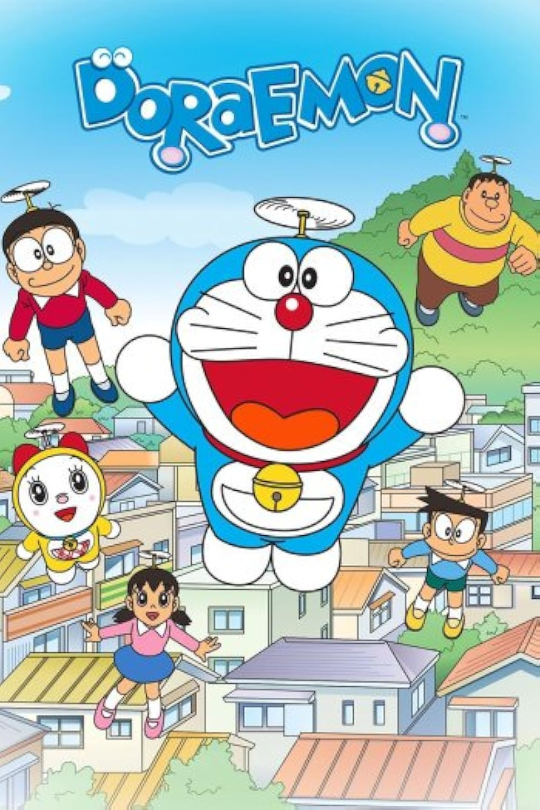

Sypnosis of 'Doraemon'
Nobita Nobi is a ten-year-old Japanese school boy, who is kind-hearted and honest, but also lazy, unlucky, weak, gets bad grades and is bad at sports. One day, a blue robot cat from the 22nd century named Doraemon is sent back to the past by Nobita's future great-great-grandson, Sewashi Nobi, to take care of Nobita so that his descendants can have a better life. Doraemon has a four-dimensional pocket in which he stores tools, inventions, and gadgets from the future to aid Nobita whenever he is faced with a problem.
Creation of 'Doraemon'
Doraemon (ドラえもん) is a Japanese manga series written and illustrated by Fujiko F. Fujio. First serialized in 1969, the manga's chapters were collected in 45 tankōbon volumes published by Shogakukan from 1974 to 1996.The manga spawned a media franchise. Three anime TV series have been adapted in 1973, 1979, and 2005. Additionally, Shin-Ei Animation has produced over forty animated films, including two 3D computer-animated films, all of which are distributed by Toho. Various types of merchandise and media have been developed, including soundtrack albums, video games, and musicals. The manga series was licensed for an English language release in North America, via Amazon Kindle, by a collaboration of Fujiko F. Fujio Pro with Voyager Japan and AltJapan Co., Ltd. The anime series was licensed by Disney for an English-language release in North America in 2014, and LUK International in Europe, the Middle East and Africa.
